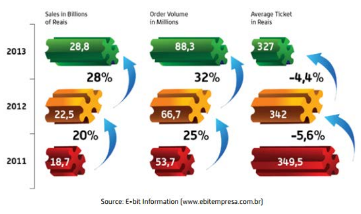
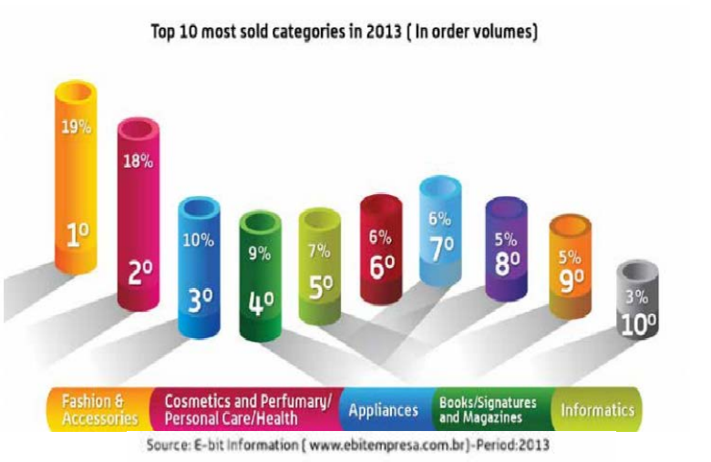

According to the Brazilian Chamber of Electronic Commerce report, the e- commerce segment ended 2013 with US$12.5 billion in earnings, an increase of 28% as compared to 2012. A total of 88.3 million orders were placed in 2013, a 32% increase compared to the previous year. Throughout the year, 9.1 million people made their first online purchase, and the number of consumers that have already made at least one purchase on the internet reached 51.3 million.
The popularization of mobile broadband is another key growth factor. Cheaper smartphones have connected people from the lower to lower–middle (“C” and “D” socio-economic classes) to the Internet, thus allowing these consumers to also buy online.

The most profitable industry sectors for online shopping include electronic appliances, computers, electronics, and fashion and accessories. Fashion is a particularly interesting category, despite the widely held belief that Brazilians need to try on clothes before purchasing. Brazilians tend to purchase through marketplaces and group buying websites. Brazilians also like to take advantage of online discount websites and coupons. Many middle-class consumers are aware that online prices for consumer goods and customer service policies are better than in stores.
Currently, the most popular online retail websites include (in alphabetical order):
Casas Bahia www.casasbahia.com.br
Lojas Americanas www.lojasamericanas.com.br
Magazine Luiza www.magazineluiza.com.br
Mercado Livre www.mercadolivre.com.br
Netshoes www.netshoes.com.br

The group buying segment also increased 10% as compared to the previous year. M-Commerce (mobile) transactions are also on the rise, reaching 4.2% of total transactions. Amazon, Google, Yahoo and other U.S. giant companies already have offices in Brazil.
Trends
Mobility is one of the strongest trends for 2014, contributing to the M-Commerce rise. Consumers are learning to compare prices and information products via Internet and often prefer the convenience of purchasing items via e-commerce.
Business-to-consumer (B2C) e-commerce segment in Brazil accounted for US$12.5 billion in 2013. One factor enabling the development of this sector is the “long-tail” effect, which allows a wider product offering in niche areas compared to that found in physical storefronts. Surveys held in other countries, for example, indicate that online stores’ inventories are 6 to 23 times larger than those of physical stores. Online retailers are taking advantage of U.S. selling techniques. For example, in 2013 in Brazil, Black Friday generated retail sales of $335 million on a single day breaking all the previous records.
U.S. B2C firms seeking to reach the online Brazilian consumer from their U.S. bases should proceed with caution. It is cost prohibitive and unreliable for online shoppers to purchase and import products into the country from the U.S. because of high import taxes. Direct sales from the U.S. are subject to customs and duties regulations. Although Brazil has made substantial progress in reducing traditional border trade barriers (tariffs, import licensing, etc.), rates in many areas remain high and continue to favor locally produced products.
Geography plays a major role when evaluating the country’s potential. Consumers in the state of São Paulo account for one-third of online purchases (34.2%), which reflects Brazil’s concentration of wealth and education. U.S. firms should take this concentration into account when assessing potential partnerships and working with consultants and online service providers. Many of the major consulting firms are based in São Paulo, the country’s business capital.
Payment methods are complex and varied in nature. Most Brazilians still use cash, checks and payment slips, but the potential for electronic payment methods is huge. According to a survey conducted by Brazilian Association of Credit Card and Service Companies (ABECS) (Associação Brasileira das Empresas de Cartões de Créditos e Serviços), only 27% of the country’s payments are made via credit, debit or prepaid cards. Security continues to be a concern, with relatively little information available regarding online fraud. According to Forbes, Brazil suffers from weak legislation against cybercrimes.
International transactions can be challenging for residents and visitors alike. While visitors have relatively few problems using credit cards at hotels and tourist venues, the same is not true for online purchases. Those wishing to pay for services such as airline or movie tickets online encounter barriers, as many Brazilian websites do not accommodate international credit cards. The U.S. Commercial Service has seen some improvements, perhaps spurred by the anticipated large number of international visitors coming to Brazil for major sporting events in 2014 and 2016. Brazilian merchants are increasingly aware of the need to partner with banks and payment providers that can enable foreigners to securely purchase from local websites. U.S. firms providing e-commerce solutions to meet these needs may thus find good opportunities in Brazil.
Travel and tourism services purchased digitally within Brazil play an important role in the growth of e-commerce. E-market analysts estimate that travel represented close to a third of the country’s total e- commerce sales in 2013. Brazil’s sheer size means that air travel is required to get from place to place, and airline tickets can be expensive.
Brazil’s expanding middle class, especially those at the upper end, will drive growth in e-commerce here. E-commerce sales will continue to come from wealthier buyers, who have more expendable income and more experience in online shopping.
Tariffs, in general, are the primary instrument in Brazil for regulating imports. All tariffs are ad valorem, with rates between 0 and 35%, levied on the Cost Insurance Freight (CIF) value of the import, with the exception of some telecommunication goods. Brazil maintains a higher average tariff on processed items than for semi-processed goods and raw materials. The United States continues to encourage tariff reductions on products of interest to US firms. In addition, relatively few Brazilians are comfortable navigating English language websites.
Given the market size and potential, U.S. retailers are encouraged to explore strategies that include a local presence in the market.
Web Resources:
Brazil Chamber of Electronic Commerce www.camara-e.net
Brazilian Association of Credit Card and Service Companies www.abecs.org.br
For more information about export opportunities in this sector, please contact Industry Specialist Ebe Raso: ebe.raso@trade.gov